Parafia pod wezwaniem Nawiedzenia Najświętszej Maryi Panny
Adres: 39-311 Zdziarzec 96,
Telefon: (0-14) 68-24-776
Dekanat: Radomyski
e-mail: zdziarzec@wsd.tarnow.pl
Oficjalna strona parafi
Odpusty: I niedz. lipca - Nawiedzenie NMP, II niedz. października - MB Różańcowej,
Żarówka 3 maja - MB Królowej Polski
Msze święte - niedziela Zdziarzec 7:00, 10:30, 15:30, Żarówka 9:00, 14:00
Msze święte - dni powszednie 19:00 (18:00 lub 17:00)
Kapłani parafii:
- 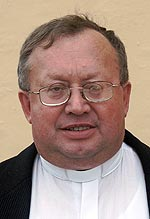 ks.Eugeniusz Habura (*09.11.1951 r.),
pochodzący z Rylowej (parafia Szczurowa), proboszcz od 1990 r. Pracował w Chełmie, Gumniskach,
Mościcach i Bochni. Przeprowadził gruntowny remont kościoła w Zdziarcu, oraz odnowinie wnętrza
kaplicy w Żarówce. Wyremontował kaplicę cmentarną i ogrodzenie na cmentarzu parafialnym w
Zdziarcu. Organizator życia społecznego (Caritas) i religijnego (duchowa adopcja) w parafii. W
grudniu 2013 roku został Honorowym Wyróżniony "Za zasługi dla Miasta i Gminy Radomyśl Wielki" za
"Ks. Habura to duszpasterz, który nikomu nie odmawia pomocy nie tylko duchowej, ale i
finansowej. Jako pierwszy w gminie rozpoczął organizowanie spotkań opłatkowych dla osób
starszych. Zawsze bardzo angażuje się w organizację różnego rodzaju wydarzeń patriotycznych, a
jako gospodarz parafii zasłużył się wieloma ważnymi inwestycjami przy kościele i na cmentarzu co
bardzo podniosło walory estetyczne miejscowości."
. Ks. Eugeniusz jest inicjatorem wielu spotkań wzmacniajacych wspólnotę parafii, między innymi
spotkania "Opłatek dla seniora" w Żarówce.
Na podstawie:naszemiasto.radomyslwielki.org.pl (dostęp 14.08.2017r.).
- 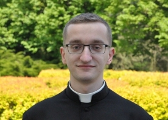Ks. Jakub Kulpa, pochodzący z parafii św.
Antoniego Opata w Męcinie koło Limanowa, wikariusz w parafii Zdziarzec od września 2017r.
Poprzedni proboszczowie:
- Ks. Andrzej Knapik, proboszcz w latach od 1989 r. do 1990 r., duszpasterz Polonii od 1996 r.
- 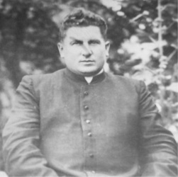Ks. kan. Zygmunt Zając (*18.01.1914 r.,
+24.11.1989 r.), pochodzący z parafii Gnojnik, proboszcz w latach od 1945 r. do 1989 r.
- 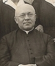Ks. Antoni Gliński , proboszcz w latach od 19xx
do 1945 r.
- 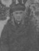Ks. kanonik Jakub Krogulski (*1853 r. , +1927
r.), pochodził z Tuchowa z patryjotycznej i wykształconej rodziny (Tuchowskie Wieści nr 6 (25)
styczeń 1993 r.), proboszcz w latach od 1883 r. do 1927 r. Ks. Krogulski był w parafii Zdziarzec
organizatorem: życia religijnego (rozwinął bractwo "Straż honorowa Serca Jezusowego", trzeci
zakon św.Franciszka, różaniec żywy, apostolstwo modlitwy), życia społecznego (założył w 1926 r.
Związki Młodzieży Dziewcząt i Chłopców, uczestniczył w założeniu straży pożarnej, kółka
rolniczego, kasy oszczędnościowej tzw. Kasy Rejfejsena założonej w styczniu 1903 r.) oraz
rozwoju edukacji (organizował nauczanie wieczorowe, teatr, bibliotekę). Na cmentarzu parafialnym
w Zdziarcu został pochowany Marcin Krogulski (*1828 r. +1901 r.) ojciec ks. proboszacza, który
spędził ostatnie lata życia u swojego syna.
- 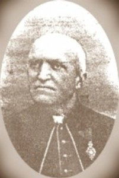Ks. Eugeniusz Wolski (*28.01.1848 r.,
+19.10.1924 r.), pochodzący z Otfinowa k. Dąbrowy Tarnowskiej, proboszcz w latach od 1876 do
1883 r., kontynuował rozpoczętą przez swojego poprzednika budowę nowej świątyni, a także
doprowadził do wznowienia po kilkudziesięcioletniej przerwie działalność wielu bractw
kościelnych. W 1885 roku został proboszczem w Dębicy i posługę tę pełnił do śmierci 19
października 1924 r., czyli niemal cztery pełne dekady.
- Ks. Tomasz Turz (*1818 r., +1903 r.), proboszcz w latach od 18xx do 1876 r. Ks. Turza wraz z
parafianami rozpoczął w roku 1870 r. budowę obecnego murowanego kościoła z wieżą, otoczonego
murem. Ks. Tomasz Turza był następnie proboszczem parafii w Zasowie w latach od 1876 r. do 1903
r.
Poprzedni wikariusze:
- 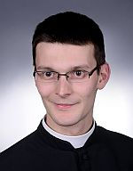Ks. Damian Warzecha, pochodzący z parafii św.
Jana Nepomucena w Bochni, wikariusz od 2014 r. do sierpnia 2017r. Ks. Damian Warzecha urodził
się 8 czerwca 1988 roku w Brzesku, syn Jerzego i Bożeny z domu Kolarz. Ma młodszą siostrę
Monikę. Do szkoły podstawowej i średniej uczęszczał w Bochni, maturę zdał w Liceum
Ogólnokształcącym w Zespole Szkół nr 2 im. Stanisława Konarskiego Parafia Zdziarzec była jego
pierwszą placówką duszpaterską. Szanowany przez parafian i bardzo lubiany przez młodzież. Ks.
Damian szczególnie zaangażował się organizowanie w życie duszpasterskie młodzieży i
organizowanie życia pielgrzymkowego parafii. 6 sierpnia 2017r. ks. Damian był serdecznie żegnany
wraz z podziękowaniami za jego pracę na rzecz parafii i parafian przez wiernych na mszach w
Zdziarcu i w Żarówce. W tym dniu w Żarówce kapela "Żarowianie" na zakończenie mszy zagrała
pożegnalną pieśń, a u obecnych zakręciła się niejedna łza żalu z pożegnania i wdzięczności za
posługę ks. Damiana.
Wypowiedź ks. Damiana dla parafiazdziarzec.pl: "Święcenia kapłańskie przyjąłem 31 maja 2014 roku
z rąk J.E. ks. Biskupa Andrzeja Jeża a dzień później wraz z dwoma moimi księżmi rodakami
odprawiliśmy swoją pierwszą Mszę Świętą w rodzinnej parafii. Mam młodszą siostrę Monikę. W
Wielkim Poście odbyłem praktykę duszpasterską w parafii św. Mikołaja w Przyszowej. W seminarium
byłem odpowiedzialny za Duchową Adopcję Dziecka Poczętego, należałem do grupy diakonów
odwiedzających zakład karny w Tarnowie oraz chodziłem na świetlicę Caritas, aby pomagać w nauce
dzieciom i młodzieży. Byłem także odpowiedzialny za filmy, które wspólnie oglądaliśmy wraz z
klerykami Interesuje się psychologią, teatrem (należałem do amatorskiego teatru przy parafii w
Bochni) eschatologią z której napisałem i obroniłem pracę magisterską pt. "Stamtąd przyjdzie
sądzić żywych i umarłych. Elementy teologii sądu Bożego na podstawie wybranych publikacji
teologicznych", lubię także sport, oraz oglądać dobre filmy. Każdego roku chodzę na Pieszą
Pielgrzymkę Tarnowską. Na moim obrazku prymicyjnym umieściłem hasło na całe moje kapłaństwo:
"Miłość Chrystusa przynagla nas" (2Kor 5). Parafia Zdziarzec jest moją pierwszą placówką
duszpasterską. Bardzo się cieszę, że będę mógł tutaj pracować oraz stawiać swoje pierwsze kroki
na kapłańskiej drodze. W parafii będę odpowiedzialny za ministrantów i lektorów z Żarówki, grupy
młodzieżowe ze Zdziarca i Żarówki oraz DSM i przygotowanie dzieci z klasy II do pierwszej
Spowiedzi i Komunii Świętej. Prowadzę także stronę internetową. Matce Bożej Zdzarzeckiej oraz
świętemu Janowi Bosko, mojemu niebieskiemu Przyjacielowi" polecam moją kapłańską drogę oraz
Wszystkich, których Pan Bóg postawi na mojej drodze."
Ks. Damian bardzo energicznie współorganizował Szkolne Koło Caritas w Zdziarcu, w takich akcjach
jak zbiórki pieniędzy, czy odwiedzanie chorych w parafii oraz chorych dzieci w szpitalach
(tarnow.gosc.pl).
Na podstawie: naszemiasto.radomyslwielki.org.pl (dostęp 14.08.2017r.), parafiazdziarzec.pl
(dostęp 14.08.2017r.), tarnow.gosc.pl (dostęp 14.08.2017r.).
- 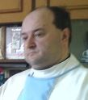Ks. Ryszard Serafin (*06.05.1967 r.), pochodzący
z parafii Gnojnik, wikariusz w latach od 2008 r. do 2014 r. W latach 1993-1997 był wikariuszem w
parafii Kamienica. W latach 1997-1999 był wikariuszem w parafii pw. Podwyższenia Krzyża św. w
Zbylitowskiej Górze. W latach 1999-2002 pełnił posługę kapłańską w parafii św. Marcina w
Gnojniku. W 2002 roku, został skierowany do pracy w parafii pw. MB Nieustającej Pomocy w Uściu
Gorlickim, gdzie pomagał przy budowie nowego kościoła. W latach 2006 - 2008 pełnił posługę
wikariusza w parafii Długołęka Świerkla k./ Nowego Sącza. Obecnie wikariusz w parafii Brzeźnica
k. Dębicy.
- 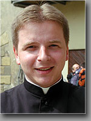Ks. Piotr Gwiżdż, pochodzący z parafii w
Ujanowicach, wikariusz w latach od 2005 r. do 2008 r., obecnie misjonasz w Norwegii.
- 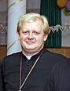Ks. Paweł Żurowski wikariusz w latach od 2002 r.
do 2005 r., obecnie misjonasz w Boliwii (Ameryka Południowa) od 2006 r. W luty 2017 roku
odwiedził parafie opowiadając o swojej pracy misjonarskiej.
- Ks. Andrzej Koroński (*22.09.1967 r., +07.02.2012), pochodzący z parafii pod wezwaniem Matki
Bożej Bolesnej w Nowym Sączu, wikariusz w latach od 1999 r. do 2002 r. Zmarł będąc wikariuszem
parafii pw. św. Andrzeja Apostoła w Łukowicy (od 2009 r). Wcześniej swoją duszpasterską posługę
sprawował m.in. w parafii w Nowym Rybiu oraz pełnił również funkcję wicenotariusza do spraw
łączności internetowej w dekanacie Tymbark.
- 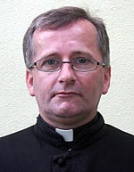Ks. Zbigniew Dudek (*30.03.1969 r.), pochodzący
ze Słopnic, wikariusz w latach od 1996 r. do 1999 r. Obecnie probosz w parafii w Banicy od roku
2003.
Na podstawie strony www.tgn.diecezja.tarnow.pl.
- 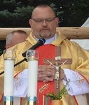Ks. Marek Wójcik , wikariusz w parafii Zdziarzec w
latach 1993 do 1996. Ks. Marek przyjął święnienia kapłańskie 29 maja 1993. Obecnie jest on
proboszczem w parafii Żmiąca. Parafię Żmiąca objął 18 sierpnia 2013r. po powrocie z Ukrainy,
gdzie pracował od 2007 r. w archidiecezji lwowskiej.
- 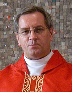Ks. Zbigniew Wolak (*02.12.1957 r.), urodzony w
Dębicy, ma siostrę. W 1982 ukończył Wyższe Seminarium Duchowne (WSD) w Tarnowie. Ks. Zbigniew
Wolak był wikariuszem w parafii Zdziarzec przez 7 lat (od 1984r. do 1991r.). W parafii
organizował życie oazowe i pielgrzymowe młodzieży. W kaplicy w Żarówce otworzył bibilotekę
książki religijnej. Ks. Zbigniew był bardzo lubianym wikarym, szczególnie przez młodzież. Zawsze
uśmiechnięty i pogodny, chętnie grał na gitarze i śpiewał. Uprawiał dużo sportu (ćwiczył,
biegał, jeździł na rowerze), czym potrafił zarazić otoczenie.
Fotografował i samodzielnie wywoływał zdjęcia. Zasłynął też ze swoich nie sztampowych kazań, w
których brawurowo odnosił się do filozofii i literatury. W roku 1991r. został wikariuszem w
parafii Uszew pw. Św. Floriana Męczennika.
W 1993r. ukończył doktoratem studia filozoficzne na Papieskiej Akademii Teologicznej (PAT) w
Krakowie. Od 1993r. wykłada filozofię i logikę na Wydziale Teologicznym w Tarnowie (w tym
również w tarnowskim WSD) oraz na innych uczelniach teologicznych i świeckich. Po habilitacji w
2006 r. został zatrudniony na Wydziale Filozoficznym PAT. Promotorem jego pracy magisterskiej i
doktorskiej oraz jednym z recenzentów pracy habilitacyjnej był ks. prof. Michał Heller.
Począwszy od marca 2008r. ks. dr hab. Zbigniew Wolak, publikuje na stronie parafii Bogumiłowice
swoje rozważania.
Na podstawie: www.bogumilowice.diecezja.tarnow.pl (dostęp 14.08.2017r.), upjp2.edu.pl (dostęp
14.08.2017r.).
- 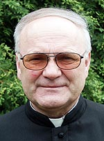Ks. Stefan Tabor (*17.10.1947 r.), wikariusz w
latach od 1980 r. do 1987 r. Rozpoczął prace budowlane (1980 r.) i doprowadził do konsekracji
kaplicy pod wezwaniem Matki Boskiej Królowej Polski w Żarówce (1983 r.). Zainicjował budowę
kościoła w Janowcu (1983 r.), konsekrowanego w 1988 r. Obecnie jest proboszczem w Szymbarku. Ks.
Tabor jest wicedziekanem dekanatu Ropa.
Na podstawie: www.tgn.diecezja.tarnow.pl.
- 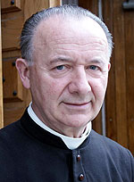Ks. Władysław Tarasek (08.03.1936r.,
+20.03.2008 r.), wikariusz w parafii Zdziarzec od 1972 do 1980 r. Ks. Władysław Tarasek, syn
Józefa i Anny z domu Obrzut, urodził się 8 lutego 1936 r. w Starej Wsi koło Grybowa w powiecie
nowosądeckim. Ks. Tarasek 2 września 1972 r., zgodnie z poleceniem biskupa Jerzego Ablewicza,
objąć wikariat w Zdziarcu, po wcześniejszym odmówieniu objęcia probostwa w Siedliskach koło
Tuchowa. Była to świadoma rezygnacja. Ks. Tarasek zainicjował (1979 r.) budowę kaplicy w
Żarówce. Przez 4 lata pełnił funkcję rektora w Janowcu. W latach 1980-2006 r. był proboszzcem w
parafii Dobra (dekanat Tymbark). Ksiądz Władysław w latach 1985-1992 pełnił urząd dziekana
dekanatu Tymbark. W roku 1996 został mianowany Kanonikiem Honorowym Kapituły Kolegiackiej w
Nowym Sączu. Zmarł 20 marca 2008 roku. Spoczywa na miejscowym cmentarzu parafialnym w Dobrej
Na podstawie: www.regiony.gminadobra.pl/, Rocznik Sądecki t.38 2010r.
- 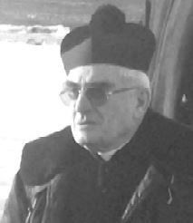Ks. Mieczysław Ryba (23.12.1928 r, 22.03.2016
r.) urodził się w Ciężkowicach, pochowany na cmentarzu parafialnym w Dulczy Wielkiej. Egzamin
dojrzałości złożył w 1950 roku, w Tuchowie. Wstąpił do Wyższego Seminarium Duchownego w
Tarnowie, a po ukończeniu studiów filozoficzno - teologicznych przyjął święcenia kapłańskie z
rąk biskupa Karola Pękali w dniu 29 czerwca 1955 roku. Jako wikariusz pracował w parafiach:
Jurków koło Limanowej, Zdziarzec i Dulcza Wielka. W latach 1965 - 1999 pełnił urzšd proboszcza
parafii Dulcza Wielka, a następnie pozostał w tejże parafii, w charakterze rezydenta. Ponadto
sprawował obowišzki dekanalnego ojca duchownego w dekanacie Radomyśl.
Ks. Mieczysław Ryba był wikariusz w parafii Zdziarzec w latach od 1960 r. do 1965 r. Ks.
Mieczysław Ryba między innymi zastępował ks. Zygmunta Zająca podczas jego wyjazdu do Stanów
Zjednoczonych.
Na podstawie: www.rdn.pl (dostęp dn. 23.03.2016 r.).
- 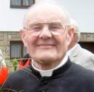 Michał Smolik (25.09.1928 r., +25.10.2015 r.),
wikariusz w latach od pięćdziesiątych XX
wieku. Ks. Michał Smolik urodził w Tarnowie. Pochodził z parafii pod wezwaniem Najświętszego
Serca Pana Jezusa w Tarnowie. Egzamin dojrzałości złożył w Tarnowie. Wstąpił do Wyższego
Seminarium Duchownego w Tarnowie, a po ukończeniu studiów filozoficzno - teologicznych przyjął
święcenia kapłańskie z rąk biskupa Karola Pękali 9 maja 1954 roku. Jako wikariusz pracował w
parafiach: Góra Św. Jana, Bruśnik, Góra Ropczycka, Trzciana koło Bochni i Zdziarzec. W latach
1969 - 1973 pełnił urząd administratora parafii Szarwark, w latach 1973 - 1991 urząd proboszcza
parafii Św. Rocha w Nowym Sšczu, a w latach 1991 - 999 urząd proboszcza parafii Słopnice Górne.
Ponadto sprawował obowiązki dekanalnego ojca duchownego w dekanacie Limanowa. Po przejściu na
emeryturę zamieszkał jako rezydent w parafii Berest. W latach 2000 - 2009 mieszkał jako rezydent
w parafii Żegocina. Ks. Michał Smolik zmarł 25 października 2015 roku.
Na podstawie: www.rdn.pl (dostęp w dn. 23.03.2016 r.).
- 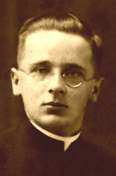Ks. Roman Ulatowski, pochodził z Tuchowa,
wikariusz i katecheta parafii Dąbrowa Tarnowska, b. wikariusz parafii Zdziarzec w latach od 193x
r. do 19xx r., Limanowa W czasie niemieckiej okupacji prawdopodobnie współpracował z polskim
podziemiem niepodległościowym. 26.06.1943 odwiedzał swą matkę w Tuchowie. Tam naszli go Niemcy,
poszukujący jego brata, członka AK. Aresztowali go. Gdy matka się za nim ujęła, zastrzelili ją
na miejscu i poranili kapłana. Wrzucili go na samochód, zawieźli do Uniszowej i tam, nad
rzeczką, zamordowali.
Na podstawie: lsotuchow.pl.
- 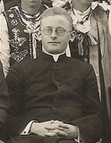Ks. Józef Solak, wikariusz w latach od 19xx r. do
19xx r. (1937 r.), był wikariuszem za proboszcza ks. Antoniego Glińskiego.
- Ks. Kołacz, wikariusz w latach od 19xx r. do 19xx r. (1926 r.), był wikariuszem za proboszcza
ks. Krogulskiego.
- Ks. Wojciech Papież, wikariusz w latach od 1915 r. do 1917 r.
- Ks. Jan Gawlicki (Gargula), wikariusz w latach od 1895 r. do 1896 r.
- Ks. Florian Gryl, wikariusz w latach od 1892 r. do 1893 r.
- Ks. Marcelin Narcyz Klimkiewicz (na podstawie strony Magdalena Stawowy -
Śpiewnik religijny Agaty Michałeckiej z 1875 roku jako przykład kobiecej twórczości muzycznej
)
Księża Rodacy
- Ks. Bronisław Marczyk pochodzący ze Zdziarca, wyświęcony w 1958 r.
- Ks. Dariusz Król pochodzący ze Zdziarca, wyświęcony w 2007 r.
- Ks. Krzysztof Kiszka pochodzący ze Zdziarca, wyświęcony w 2014 r.
- kl. Wojciech Mróz pochodzący z Żarówki, Alumn (III rok, WSD Tarnów)
Zdjęcia
Opis
Parafia nasza położona jest w dekanacie Radomyśl Wielki wzdłuż głównych dróg: Tarnów - Mielec i
Radomyśl Wielki - Dębica.
Parafia Zdziarzec należy do najstarszych, gdyż jej początki sięgają XIV w. Dokument o erygowaniu
parafii pochodzi z 1320 r. Do 1938 r. do tej parafii należały cztery wioski: Zdziarzec, Żarówka,
Dulcza Wielka i Janowiec. W 1938 r. samodzielny rektorat ustanowiono w Janowcu. Dziś jest to już
samodzielna parafia. W latach 1984-1989 zbudowano również kaplicę filialną pw. MB Królowej Polski w
Żarówce. W czasie II wojny światowej przez teren parafii przebiegał front, co spowodowało
wysiedlenie ludności i wielkie straty materialne: spalone domy, zniszczony dobytek. Wskutek działań
wojennych ucierpiał też kościół parafialny, z którego pozostały tylko częściowo mury i zakrystia.
Później został odbudowany przez parafian, którym przewodził proboszcz, ks. Zygmunt Zając. O becnie
kościół jest wciąż upiększany. Teraz do parafii należy: Zdziarzec, Żarówka i część Dulczy Wielkiej,
tzw. przysiółek Świerże.
Zdziarzec or Zdzarzec, with Janowicami, a village, in the Pilzno county, in a sandy plain (225 meters
above sea level), along the highway from Czarna to Radomysl Wlk (near Debica), 3.7 kilometers south
of Radomysl Wlk., has a Roman Catholic parish, 184 houses and 868 residents (434 men, 434 women),
842 Roman Catholics and 26 Jews. (Translator's note: The description continues but was not
translated.)
The parish belongs to the Diocese of Tarnow, the deanery of Radomysl Wlk., and consists of Dulcza
Wielka and Zarowka. Zdziarzec borders on the north with Wolka Dulecka, on the east with Dabrowka, on
the south with Zarowka, Przeryty Bor and Dabie. Mac.
źródło : Słownik Geograficzny Królestwa Polskiego - Warszawa 1895 PGSA
Artykuł "Z życia społecznego i religijnego w Zdziarcu" o parafii Zdziarzec w "Przewodniku katolickim
z 1926 r. nr. 20. Krótki artykuł z trzema zdjęciami:
1-Ołtarz ku czci św. Teresy od Dzieciątka Jezus w kościele w Zdziarcu poświęcony 02.02.1926
2-Związek Młodzieży w Zdziarcu. Zarząd Związku chłopców
3-Związek Młodzieży w Zdziarcu. Zarząd Związku Dziewcząt z księdzem proboszczem kanonikiem Jakubem
Krogulskim i księdzem wikariuszem Kołaczem.